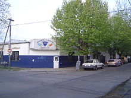

Historia:
El Centro Social y Recreativo Español, más conocido como Centro Español, es un club social y deportivo argentino, cuya sede social está ubicada en la calle Estanislao del Campo 989, del barrio Villa Sarmiento, dentro del partido de Morón en la provincia de Buenos Aires. Fue fundado el 24 de junio de 1934. Participa en la Primera División D del fútbol argentino, que originalmente era la cuarta categoría y que, a partir de la temporada 1986/87, pasó a ser la quinta para los clubes directamente afiliados a la AFA. Su primer título de AFA oficial lo obtuvo en 2011 con la Copa Integración que obtuvo la Sexta división de las divisiones juveniles C y D. Fuera del ámbito futbolístico, tiene una buena concurrencia de socios para otras actividades. Además, se encuentra incorporado a proyectos comunitarios, a través del Plan de Desarrollo Estratégico del Municipio de Morón.
La Comisión Directiva se comprometió a construir la nueva sede del club, con cancha reglamentaria, vestuarios, administración, dos canchas auxiliares, pista de atletismo, canchas de hockey y canchas de baby. Dicha construcción fue a través de un convenio entre el Club y Procrear a través de la sesión de los derechos adquiridos por el Sr. Eduardo Lomolino que cedió al club dichos derechos y se comprometió a realizarla en el predio de Moron y con plazo de finalización entre los meses de diciembre de 2014 y enero de 2015. A pesar de ello,al día de la fecha no ha habido grandes avances al respecto, al menos en lo que respecta a las obras relativas al fútbol